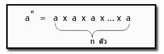
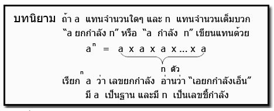

การยกกำลัง คือ การดำเนินการทางคณิตศาสตร์อย่างหนึ่งเขียนอยู่ในรูป an ซึ่งประกอบด้วยสองจำนวน คือ ฐาน a และ เลขชี้กำลัง nโดยพื้นฐานแล้วการยกกำลังจะมี ความหมายเหมือนกับการคูณ a ซ้ำ ๆ เป็นจำนวน n ตัว เมื่อ n เป็นจำนวนเต็มบวก

โดยปกติเลขชี้กำลังจะแสดงให้เห็นเป็นตัวยกทางขวาของฐาน จำนวน an อ่านว่า a ยกกำลัง หรือ เพียงแค่ a กำลัง n ในภาษาอังกฤษอาจเรียกการยกกำลังบางตัวต่างออกไป เช่น a2 จะเรียกว่า square และ a3 เรียกว่า cube เป็นต้น

สมบัติของเลขยกกำลัง
1. สมบัติการคูณเลขยกกำลังที่มีเลขชี้กำลังเป็นจำนวนเต็มบวก เมื่อ a เป็นจำนวนใด ๆ และ m, n เป็นจำนวนเต็มบวก
am × an = am + n
2. สมบัติการหารเลขยกกำลังที่มีเลขชี้กำลังเป็นจำนวนเต็มบวก
- เมื่อ a เป็นจำนวนจริงใด ๆ ที่ไม่ใช่ศูนย์ และ m, n เป็นจำนวนเต็มบวกที่ m > n am ÷ an = am - n
- เมื่อ a เป็นจำนวนจริงใด ๆ ที่ไม่ใช่ศูนย์ และ m, n เป็นจำนวนเต็มบวกที่ m = n am ÷ an=
a
m - n = 1
เมื่อ a เป็นจำนวนจริงใด ๆ ที่ไม่ใช่ศูนย์ และ m, n เป็นจำนวนเต็มบวกที่ m
< n am/ an=1 / an – m
- เมื่อ a เป็นจำนวนจริงใด ๆ ที่ไม่ใช่ศูนย์ และ m, n เป็นจำนวนเต็มบวกที่ m > n am ÷ an = am - n
- เมื่อ a เป็นจำนวนจริงใด ๆ ที่ไม่ใช่ศูนย์ และ m, n เป็นจำนวนเต็มบวกที่ m = n am ÷ an=
a
m - n = 1
5. ถ้า ab = 0 แล้ว a = 0 หรือ b = 0
6. ถ้า a
< b และ c < d แล้ว a – d < b - c
ทำแบบทดสอบ